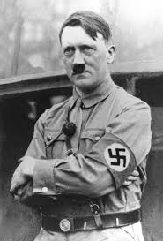

(«Mein Kampf» — «Моя борьба»), книга Гитлера, в которой он обстоятельно изложил свою политическую программу. В гитлеровской Германии «Майн кампф» считали библией национал-социализма, она получила известность еще до выхода в свет, и многие немцы верили, что нацистский лидер способен воплотить в жизнь все, что наметил на страницах своей книги. Первую часть «Майн кампф» Гитлер написал в тюрьме Ландсберга, где отбывал срок за попытку государственного переворота (см. «Пивной путч» 1923). Многие его соратники, в том числе Геббельс, Готфрид Федер и Альфред Розенберг, уже опубликовали брошюры или книги, и Гитлеру страстно хотелось доказать, что, несмотря на недостаточное образование, он также способен внести свою лепту в политическую философию. Поскольку пребывание почти 40 нацистов в тюрьме было необременительным и комфортным, Гитлер многие часы проводил диктуя первую часть книги Эмилю Морису и Рудольфу Гессу. Вторая часть была написана им в 1925-27, уже после воссоздания нацистской партии.
Первоначально Гитлер озаглавил свою книгу «Четыре с половиной года борьбы против лжи, глупости и трусости». Однако издатель Макс Аман, не удовлетворясь столь длинным названием, сократил его до «Моя борьба». Крикливый, сырой, напыщенный по стилю первый вариант книги был перенасыщен длиннотами, многословием, неудобоваримыми оборотами, постоянными повторами, что с головой выдавало в Гитлере полуобразованного человека. Немецкий писатель Лион Фейхтвангер отметил в первоначальном издании тысячи грамматических ошибок. Хотя в последующих изданиях были сделаны многие стилистические исправления, общая картина осталась прежней. Тем не менее книга имела громадный успех и оказалась весьма прибыльной. К 1932 было продано 5,2 млн. экземпляров; она была переведена на 11 языков. Всем молодоженам Германии при регистрации брака навязывали покупку одного экземпляра «Майн кампф». Огромные тиражи сделали Гитлера миллионером.